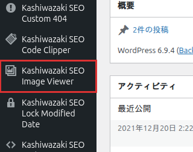

インストール・初期設定
プラグインのインストールから初期設定まで、ステップバイステップで解説します。
インストール手順
1
プラグインファイルを /wp-content/plugins/kashiwazaki-seo-image-viewer/ にアップロード
2
WordPress管理画面「プラグイン」から有効化
3
左メニューに「Kashiwazaki SEO Image Viewer」が追加される

有効化後、フロントエンドの画像に自動的にLightbox機能が適用されます。設定ページで動作のカスタマイズが可能です。
設定ページ
設定ページでは、Lightbox表示と画像SEO診断の動作をカスタマイズできます。
管理画面カラム
投稿一覧に画像SEOスコアのカラムが自動追加されます。カラムヘッダーをクリックしてスコア順にソートできます。
| カラム | 説明 |
|---|---|
| 画像SEOスコア | 投稿内の全画像を診断し算出したスコア（0〜100） |
スコアは投稿の保存・更新時に自動計算されます。既存の投稿は画像ビューアーページから一括診断を実行できます。